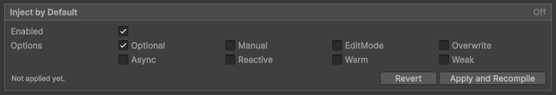

Inject with scopes
Inject every member of a class
A scope is a class, an assembly or the project in which Selvage injects every field and property
that can hold a dependency. When you add [Inject] to a class, each of them becomes a member, without
an [Inject] of its own:
[Inject]
public class Player : MonoBehaviour
{
Rigidbody body; // injected
[DontInject] Camera view; // not injected
}A scope covers each field and property that meets the following conditions:
- Its type is a reference type: a class, an interface, an array or a delegate. This includes
stringandGameObject. - A field isn't
readonlyorconst, and a property has asetorinitaccessor and no parameters.
Static, private and serialized fields are covered too. A field that already holds a value, such as a reference you assign in the Inspector window, keeps it. For more information, refer to Values you assign yourself.
A field that isn't a dependency, such as a string or a List<int>, fails as a missing
dependency if it still holds null when Selvage injects the context. To keep it out of injection, do one
of the following:
- Assign it before Selvage injects it: in its initializer, in the constructor, or in
Awake, since Selvage injects a MonoBehaviour at the end ofAwake. - Add
[DontInject]to it, if you assign it later, such as inStart. - Set
Optionalon the scope, so that a member leftnullkeeps its default without an error.
A subclass doesn't inherit [Inject] from its base class. Add the attribute to the subclass too.
Inject every class of an assembly
To inject every class of an assembly, add the following line to any file of the assembly:
[assembly: Inject]Inject every class of the project
The Inject by Default setting injects every class of every assembly that references Selvage, as
if each assembly had [assembly: Inject]. The scripts of a new project are in such an assembly
(Assembly-CSharp), even when they never mention Selvage. To enable it, perform the following steps:
- Go to Edit > Project Settings > Selvage.
- In the Inject by Default section, enable Enabled, then enable the options every member receives.
- Select Apply and Recompile.

The Optional option is enabled by default. A project holds many fields that aren't dependencies, so this lets a field that no provider serves keep its value instead of failing.
The setting doesn't reach a precompiled DLL, or an assembly that doesn't reference Selvage, such as a Unity package's. Unity recompiles your scripts after you apply the setting. For more information about the setting, refer to Project Settings reference.
Exclude a member, class or assembly
To exclude a member, a class or an assembly from a scope, add [DontInject] to it:
[assembly: DontInject] // no class of this assembly is injected through a scopeAn [Inject] inside an excluded class or assembly includes that class or member again. Options set on the scopes around an excluded class or assembly don't apply inside it. When [Inject] and
[DontInject] are on the same member, class or assembly, [Inject] wins, and code analysis
reports SLV0101.
Set options for several members
Options set on a scope apply to every member in it. For each option, a member uses the value from its own
[Inject], else from its class, else from its assembly, else from the Inject by Default setting while
that setting is enabled. An option nothing sets is off. To turn off an option a scope enables, set it to
false:
[assembly: Inject(EditMode = true)]
[Inject(Reactive = true)]
public class Hud : MonoBehaviour
{
IScore score; // Reactive and EditMode
[Inject(Reactive = false)] ILog log; // EditMode only
}Your IDE displays the options a member receives from its scopes. For more information, refer to SLV0208.